Four countries in fifteen days: London's markets and theatres, the seaside of Brighton and the white cliffs of the Seven Sisters, Georgian Bath and its Roman baths, the castles of Cardiff, Dublin's pubs and history, and Edinburgh with a day in the Highlands. We made three changes to the original plan. Your first day is now an easy arrival day, with Bicester Village moved to day 3. Stonehenge is visited on the drive from Brighton to Bath, where it lies on the way, not as a 4-hour round trip from Cardiff. And you fly to Dublin from Bristol, about an hour from Cardiff, because the Holyhead ferry is a 4-hour drive away from Cardiff.
See it for yourself
Photos from the journey

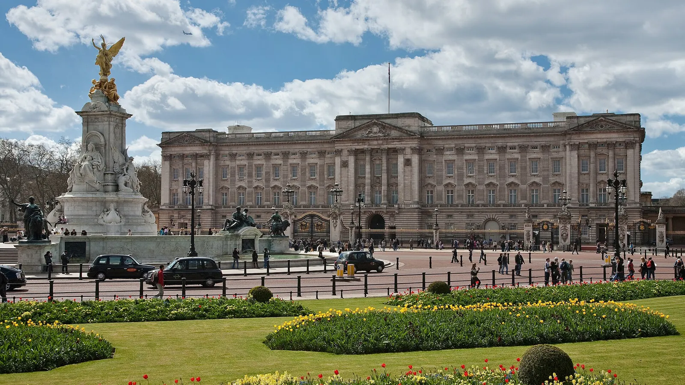
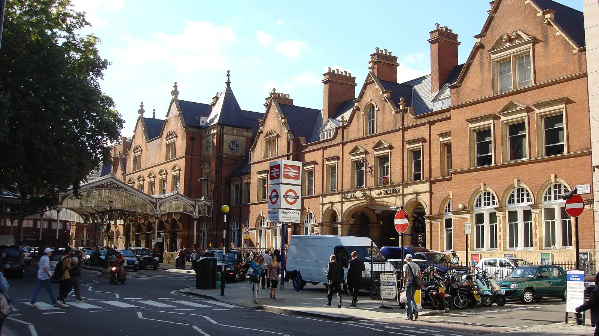
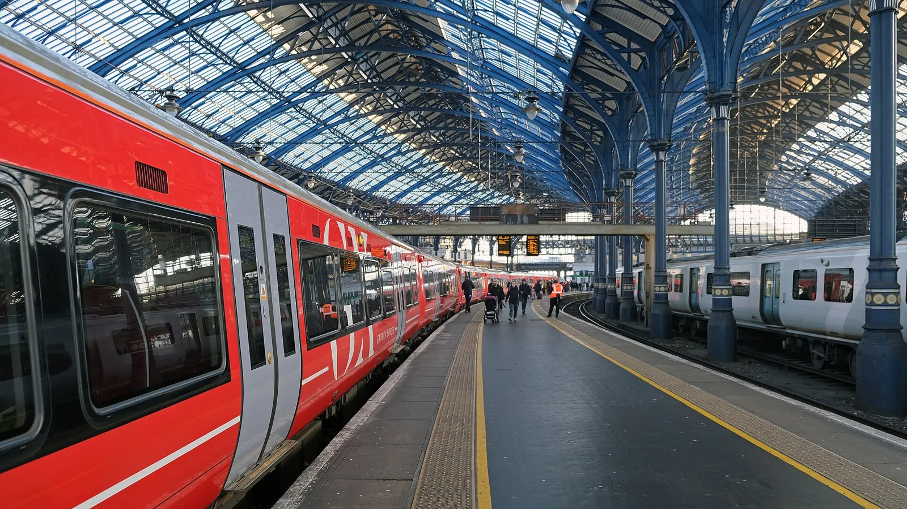
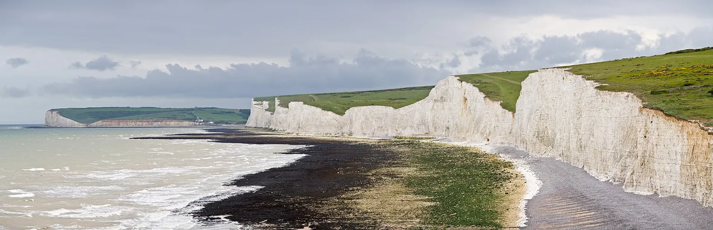
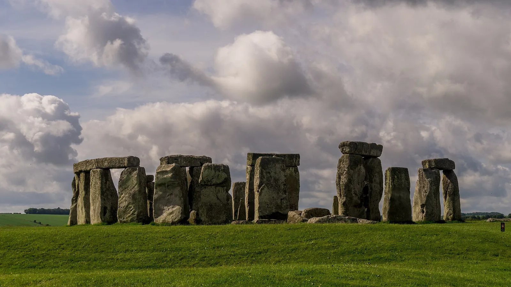
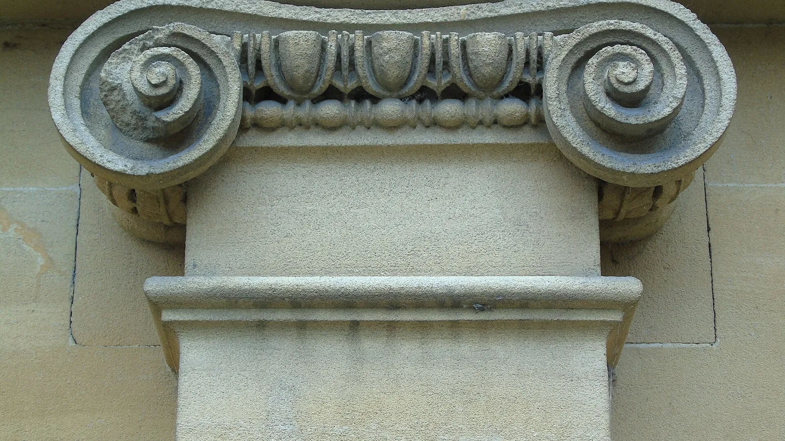
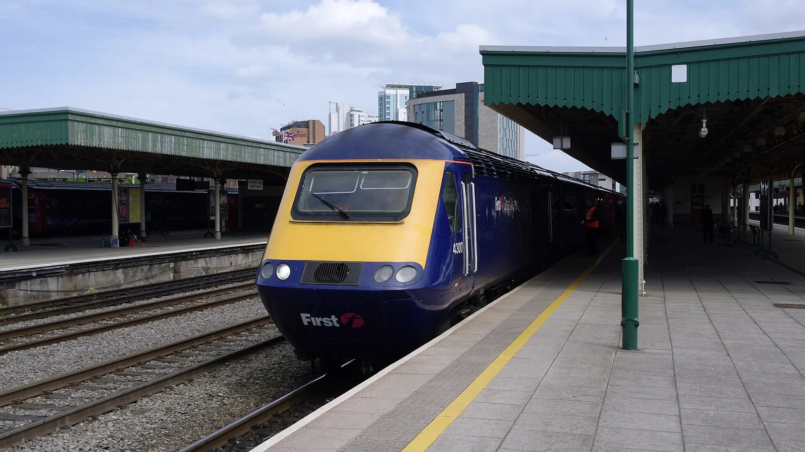
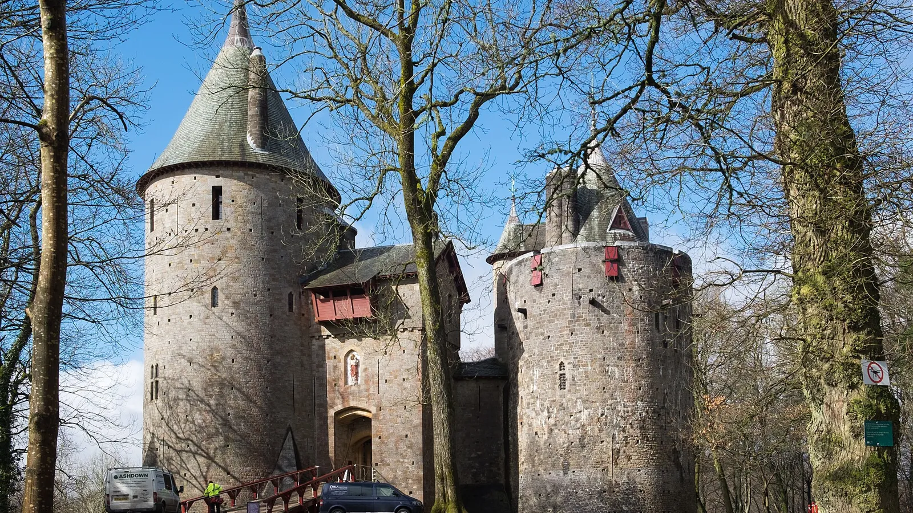
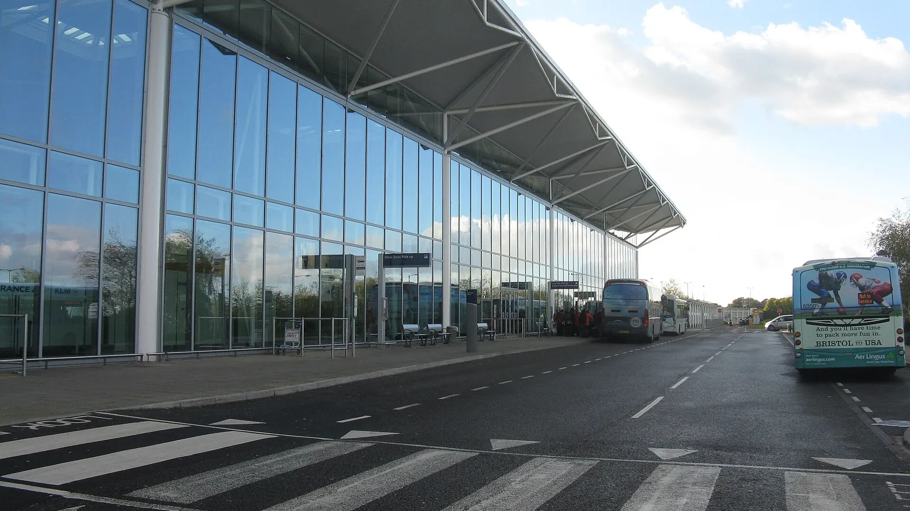
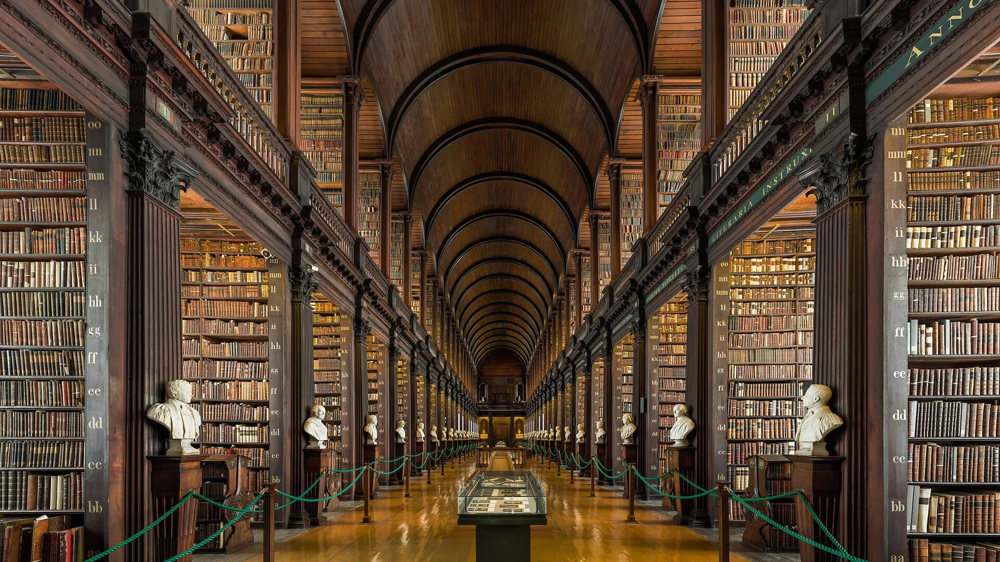
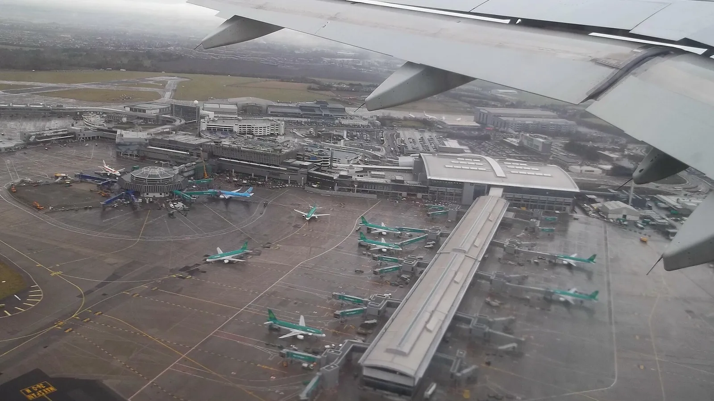


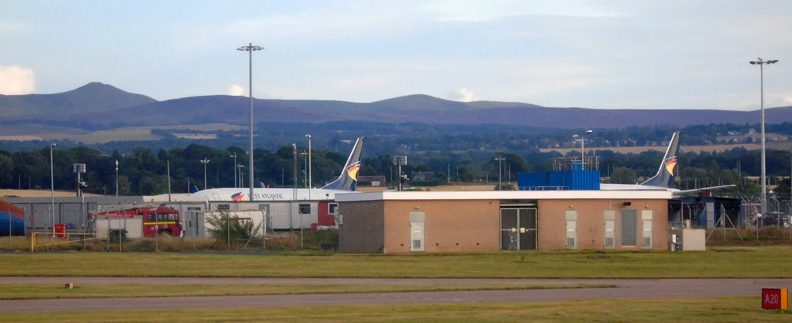
Where you go
The journey on one map
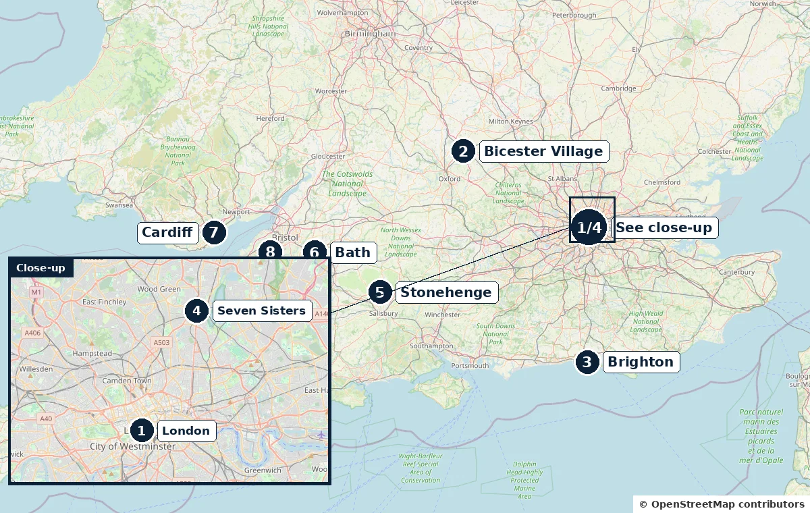
LondonBicester VillageBrightonSeven SistersStonehengeBathCardiffBristol AirportDublinEdinburghGlencoeLoch Ness
Day by day, in short
Daily travel brief
Distances are by road for the whole day. The full plan with timings comes with your detailed itinerary.
-
1
Arrive in London
- Into central London: each traveller taps their own contactless card or phone on the Tube; one card cannot pay for two people.
- Keep the first evening light; London days are long and full.
-
2
London by open-top bus
Houses of Parliament Tower Bridge
- St Paul's is open to sightseers Monday to Saturday only; on Sunday it is for worship.
- Changing of the Guard at Buckingham Palace runs on set mornings only; check the day before.
-
3
Bicester Village
- Train to Bicester Village: weekends and school holidays are very crowded; go on a weekday morning if you can.
- Over 150 boutiques: the UK has no VAT refund for tourists, so the price on the tag is the final price.
-
4
Train to Brighton: the pier, the Pavilion and the Lanes
- The Royal Pavilion: allow 1 hour 30 minutes; last entry is 45 minutes before closing.
- The beach is pebbles, not sand: bring sandals with soles.
-
5
The Seven Sisters cliffs or a Brighton day
- Seven Sisters and Birling Gap: stay well back from the cliff edges and do not sit at the foot of the cliffs: the chalk falls without warning.
- Option A needs walking shoes and about 4 to 5 hours.
-
6
Stonehenge on the way to Bath
- Stonehenge: entry is by timed ticket; book online in advance.
- This replaces the original 3-hour train via London and the 4-hour Stonehenge round trip from Cardiff.
-
7
The Roman Baths, Thermae Bath Spa and a ghost walk
- The Roman Baths: book timed tickets; arrive at opening to avoid the crowds.
- Thermae Bath Spa: book well ahead.
-
8
Train to Cardiff and Cardiff Castle
- Cardiff Castle: the house tour is by timed slot; book on arrival.
- Welsh is spoken alongside English; you will see both on every sign.
-
9
Castell Coch and St Fagans
- This day replaces the Stonehenge trip, which is now on the way to Bath.
-
10
Fly from Bristol to Dublin
- Car to Bristol Airport: arrive 2 hours before the flight.
- Temple Bar is busy and loud late at night.
-
11
Dublin: cathedrals, the castle and the Guinness Storehouse
St Patrick's Cathedral Dublin Castle
- Trinity College and the Book of Kells: book timed tickets; morning slots are quieter.
- Dublin's centre is compact; trams and taxis cover the rest.
-
12
Fly to Edinburgh
Edinburgh Airport Princes Street Gardens
- Flight to Edinburgh: flights between Ireland and the UK have no passport control on arrival in the UK, but airlines check your passport and UK visa at the gate.
- The tram from Edinburgh Airport to Princes Street takes about 35 minutes.
-
13
Edinburgh Castle, the Royal Mile and Harry Potter
Palace of Holyroodhouse Greyfriars Kirkyard
- Edinburgh Castle: book a timed ticket online.
- Holyroodhouse closes when the royal family is in residence, usually in early July.
-
14
Highlands day trip: Glencoe and Loch Ness
- Depart Edinburgh: this is a 12-hour day with about 8 hours on the road.
- If you prefer a shorter day, Stirling Castle and the Trossachs make a 9-hour trip.
-
15
Fly home from Edinburgh
- Transfer to Edinburgh Airport: leave 3 hours before an international flight.
- Pack liquids and souvenirs in checked baggage.
Local know-how
Travel hacks from our desk
Two currencies
England, Wales and Scotland use pounds; Ireland uses euros. Contactless cards work in both.
Hotel deposit
Use a credit card for the deposit or pre-authorisation at check-in, never a forex or debit card. Forex cards cannot hold funds, many hotels refuse them, and a credit-card hold is released faster.
Cards and cash
On card machines, always choose to pay in pounds sterling, never in INR. Contactless cards and phones work on every bus, Tube and train ticket barrier. Many places are card-only.
Trains and Oyster
In London, tap a contactless card or phone at the barriers instead of buying an Oyster card: daily fares are capped automatically. Book long-distance trains in advance for the lowest fares.
Plugs and weather
Plugs are the three square-pin type G at 230 volts; Indian plugs need an adaptor. Weather changes fast, even in summer: pack a light rain jacket and layers.
Tipping
Restaurants often add a 12.5% service charge. If not, 10% is normal. Pubs do not expect tips at the bar.
When to go
Best time to visit for this journey
May, June and September: long days with fewer crowds than July and August.
May to September for long days and outdoor sights; the Seven Sisters and the Highlands are at their best in summer.
The package
What's included
Included
- 14 nights with breakfast
- Hop-on hop-off bus in London
- Private car Brighton to Bath via Stonehenge
- Highlands day tour from Edinburgh
- 24/7 support from Blue Diamond Voyage
Not included
- International flights
- Flights Bristol to Dublin and Dublin to Edinburgh (we book them for you)
- Trains (we book them in advance for the best fares)
- UK and Irish visas
- Entry fees, theatre tickets and spa sessions
- Meals not listed
- Travel insurance
The detailed itinerary
Some journeys are planned. Ours are crafted.
The full 15-day plan is ready: hour-by-hour timings, drive times, temple dress codes, food for your diet and a route map for every day. Tell us your dates and your city, and we'll send it to you on WhatsApp, shaped around you.
- Hour-by-hour timings
- A route map for every day
- Hotel and room details
- Visa and entry steps
- Vegetarian and Jain dining
24/7 travel desk+91 97148 59797+91 98242 21400
Photo and map credits
- Heathrow Airport: Adrian Pingstone, Public domain, via Wikimedia Commons
- Buckingham Palace: Diliff, CC BY-SA 3.0, via Wikimedia Commons
- London Marylebone: Oxyman, CC BY 2.5, via Wikimedia Commons
- Brighton railway station: kallerna, CC BY-SA 4.0, via Wikimedia Commons
- Seven Sisters Country Park: Diliff, CC BY-SA 3.0, via Wikimedia Commons
- Stonehenge: Sumit Surai, CC BY-SA 4.0, via Wikimedia Commons
- Roman Baths: Fernando Losada Rodríguez, CC BY-SA 4.0, via Wikimedia Commons
- Cardiff Central: mattbuck (category), CC BY-SA 3.0, via Wikimedia Commons
- Castell Coch: DeFacto, CC BY-SA 4.0, via Wikimedia Commons
- Bristol Airport: M J Richardson, CC BY-SA 2.0, via Wikimedia Commons
- Trinity College Dublin: Diliff, CC BY-SA 4.0, via Wikimedia Commons
- Dublin Airport: ozz13x, CC BY 2.0, via Wikimedia Commons
- Edinburgh Castle: George Washington Wilson / Adam Cuerden, Public domain, via Wikimedia Commons
- Glencoe: Daniel Kraft, CC BY-SA 3.0, via Wikimedia Commons
- Edinburgh Airport: Thomas Nugent, CC BY-SA 2.0, via Wikimedia Commons
- Maps: © OpenStreetMap contributors; road routes by OSRM.